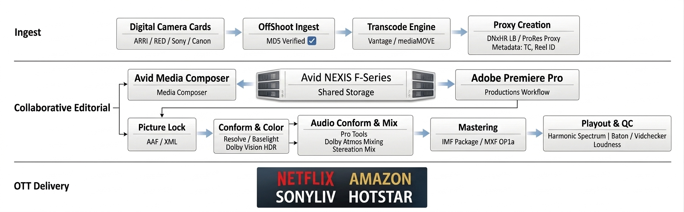

Studio-Grade Video Workflow Post-Production (2026): Ingest, NEXIS, Audio Conform, Color, QC & OTT Delivery
A practical 2026 studio-grade OTT post-production workflow covering checksum-verified ingest, automated proxy creation, collaborative editorial on Avid NEXIS, audio conform and mix, color finishing, mastering, quality control, and final digital delivery.

Modern OTT post-production is no longer just about editing fast. It is about preserving metadata, controlling shared storage behavior, preventing editorial conflicts, maintaining reliable relink paths, and ensuring that the final master is technically safe for platform delivery.
The workflow below reflects a practical high-end post pipeline for premium longform, episodic, promo, and platform-ready content in 2026. It combines secure ingest, proxy generation, collaborative editorial, audio finishing, color grading, mastering, and QC into one clear chain.
1. Ingest & Automated Proxy Creation
The process starts with camera originals from digital media such as ARRI RAW, REDCODE, and Sony X-OCN. At this stage, the most important rule is simple: do not trade verification for speed.
In a proper studio workflow, cards are securely offloaded using tools such as OffShoot with MD5 checksum verification. This confirms that copied media matches source media bit-for-bit, which is critical because every downstream stage depends on clean ingest.
Once the media lands, an automated transcode system such as Telestream Vantage or MOG mediaMOVE can watch the ingest destination and generate editorial-friendly proxies like Avid DNxHR LB or ProRes Proxy. The key is that timecode, reel ID, and clip metadata remain matched to the source, making later relink and conform reliable.
These proxies are then placed on Avid NEXIS F-Series shared storage, where editorial teams can work from a central managed environment rather than fragmented local disks.
2. Collaborative Editorial
Shared storage does not automatically create a collaborative workflow. The real value comes from how the editing platform controls access, locking, and conflict prevention.
Avid Media Composer
With Avid Media Composer, bin locking on NEXIS is native. Editors can open shared projects, and bins are clearly protected from accidental overwrite. This remains one of the strongest reasons why Avid still has a serious role in multi-editor post environments.
Adobe Premiere Pro
With Adobe Premiere Pro, the equivalent collaboration model is the Productions workflow. Instead of pushing everything into one giant project file, teams work in a Production structure where separate project files behave more like modular editorial containers. When one editor opens a project, Premiere creates a lock file, allowing others to open it in read-only mode rather than creating collisions.
For 2025 and 2026 style workflows, many facilities also use Avid NEXIS | Remote Panel for Premiere Pro to browse, pin, and work more naturally with media in the NEXIS environment.
3. Picture Lock
Once editorial decisions are approved, the workflow reaches picture lock. This is the handoff point where creative editing stops and technical finishing begins.
At this stage, the locked sequence is exported as AAF or XML, depending on the downstream finishing path. This handoff only works well if metadata discipline was maintained from ingest through editorial.
4. Audio Conform & Mix
This is the stage often missing in simplified diagrams, but it is essential in a real studio-grade pipeline.
After picture lock, the sequence is handed to audio post via AAF for conform in systems such as Pro Tools or equivalent environments. Dialogue, FX, atmospheres, music, and stems are rebuilt against the final locked picture. This is where teams perform dialogue cleanup, sound design, stem organization, mix balancing, and final format creation.
Depending on delivery requirements, outputs may include stereo, 5.1, 7.1, or Dolby Atmos. In practice, audio conform and color finishing often move in parallel after picture lock, then rejoin for final mastering.
5. Conform & Color Finishing
On the picture side, the locked sequence is relinked in finishing tools such as DaVinci Resolve or Baselight. The goal is not to keep working on proxy files, but to reconnect to the original high-resolution camera sources using the metadata preserved from ingest and editorial.
This stage includes online conform, shot validation, reframing checks, version reconciliation, and final grading. For premium OTT delivery, grading may include Dolby Vision HDR and supporting trim metadata for SDR mapping.
6. Mastering
Once sound and picture are both approved, the workflow moves into mastering. For premium OTT delivery, that often means an IMF package. For other broadcaster or regional delivery needs, teams may generate a high-bitrate MXF OP1a or another approved mezzanine format.
This stage is where editorial, picture, audio, subtitles, metadata, and versioning all stop being separate departments and become one controlled deliverable object.
7. Playout & QC
A high-end workflow should never assume that an export is automatically safe. Before final handoff, the master should be validated in a playout-aware environment.
Facilities may load the file into systems such as Harmonic Spectrum or similar server-based verification chains to confirm stable playback behavior. Automated QC tools such as Interra Baton or Telestream Vidchecker then check loudness, cadence problems, file structure, black levels, and other compliance risks before delivery.
8. OTT Delivery
By the time delivery happens, the real work should already be complete. Reliable OTT delivery is not about pressing upload at the end. It is the result of everything before it: secure ingest, metadata-safe proxy generation, collaborative storage discipline, picture lock control, audio finishing, color relink, mastering integrity, and QC validation.
When those layers are built correctly, delivery becomes a controlled final step instead of a last-minute gamble.
Where the Workflow Diagram Is Right — and Why
The diagram follows the correct broad logic for a practical OTT post pipeline:
- Ingest begins with camera originals, secure offload, and proxy generation.
- Avid NEXIS sits as the central shared editorial storage layer.
- Avid Media Composer and Adobe Premiere Pro operate as collaborative editorial options.
- Picture Lock acts as the formal handoff point into finishing.
- Audio Conform & Mix is included, which makes the flow much more realistic than an edit-to-color-only diagram.
- Conform & Color, Mastering, Playout & QC, and OTT Delivery follow in the expected finishing chain.
One real-world nuance is that after picture lock, audio finishing and color finishing may happen partly in parallel rather than strictly one after the other. But for a clean reader-facing diagram, your sequence is clear, credible, and easy to follow.
Reference Points & Official Documentation
- Adobe Premiere Pro Productions Workflow
- Avid NEXIS Remote Panel for Premiere Pro
- Hedge Mimiq
- Netflix Partner Help
- Harmonic Playout Solutions